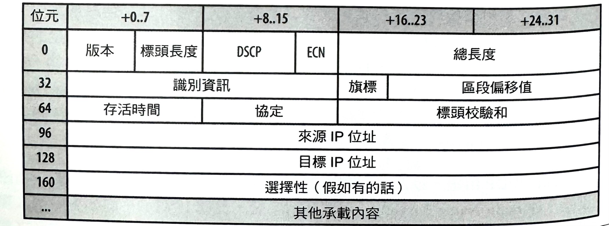
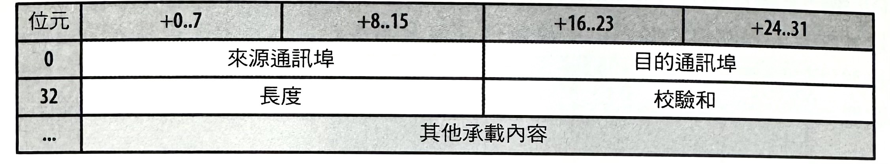
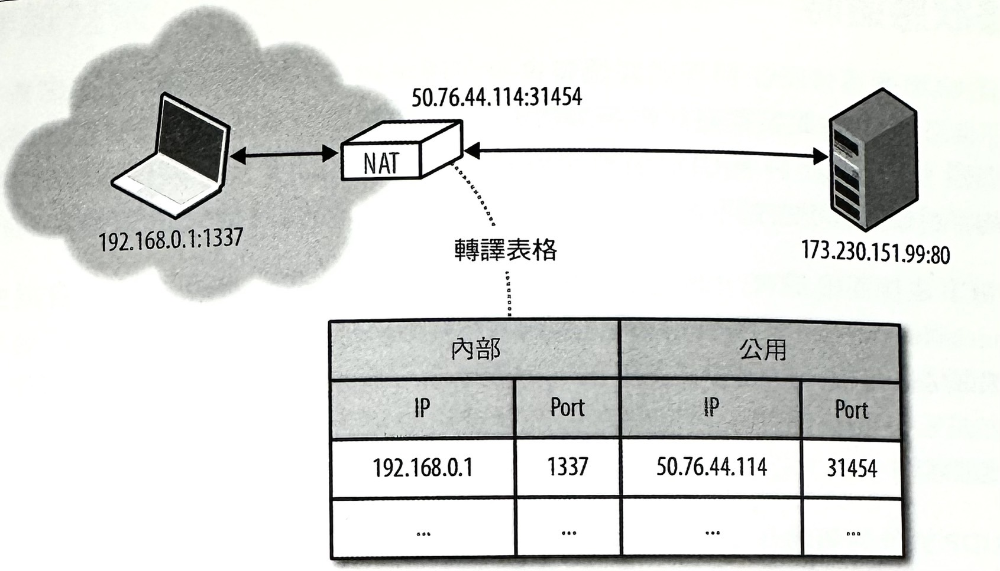
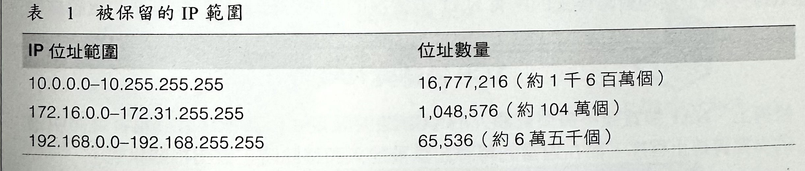
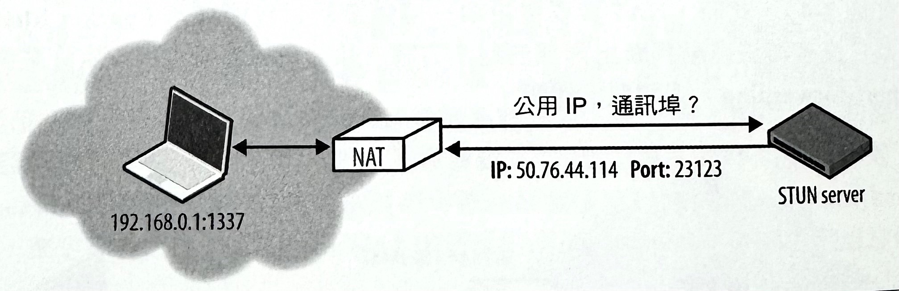
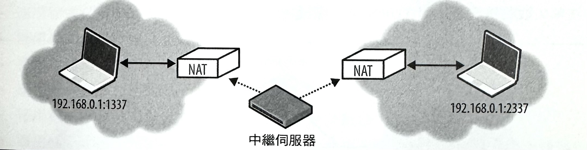
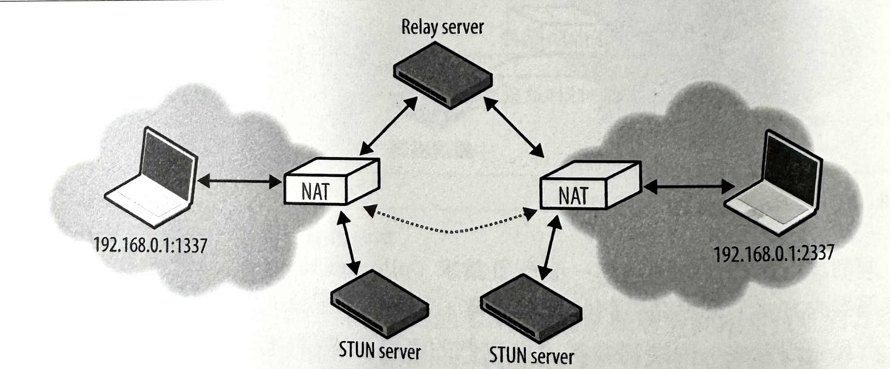

1-18-4 網路通訊基礎-UDP
簡稱 UDP 的「使用者資料包協定」（User Datagram Protocol），是在 TCP/IP 被引入之後， 而在 TCP 和 IP 規範要被分割成兩份獨立 RFC 文件之時，由 Jon Postel 於 1980 年 8 月加入到核心網路協定組裡頭的。 這個時間點是很重要的，因為就像我們將會看到的那樣 — UDP 的主要特色和訴求，並不在於它又引入哪些新東西， 而是在它選擇要去忽略掉的那些功能上。UDP 通常是被當作一個「空協定」（null protocol）來看待， 而在 RFC 768 文件當中，用來描述它的處理程序的內容，幾乎只佔一張餐巾紙大小的篇幅而已！
資料包（Datagram）
一種獨立，且會夾帶足夠資訊的資料實體，而它能在節點和傳輸網路之間， 以不需事先透過交換作業來取得信任關係的情況下，即可從來源繞徑到目標節點上。
「資料包」（datagram）和「封包」（packet）這兩個詞經常會被交替使用， 但其中還是有些差異。「封包」是用來指任何有格式化的資料區塊，而「資料包」 則通常是用來指那些經由某種沒有傳輸保證，也不會有失敗提醒之類的不可靠網路服務， 所傳遞的封包。
也因此，你將會發現到，原本在「UDP」縮寫裡的第一個字母「U」所代表的「User」（使用者）， 更常被替換成「Unreliable」（不可靠），而變成是「Unreliable Datagram Protocol」 （不可靠資料包協定）。這同時也說明了，為何 UDP 封包通常都會，也應該要被當作「資料包」（datagram）來看待的原因。
或許眾所周知的 UDP 用途，以及每個瀏覽器和網際網路應用程式所會仰賴的一項應用服務， 就是「Domain Name Server」（網域名稱系統，簡稱 DNS）。 假如有一個人類可讀的電腦主機名稱（hostname）的話，我們就得在對它進行任何的資料交換作業之前， 先查出它的 IP 位址。然而，儘管瀏覽器本身都是靠 UDP 來進行傳輸， 但過去似乎也從未正式公告過，網頁與應用程式所要搭配使用的首選協定就一定要是 UDP 才行。 而在 WebRTC 出現之後，將會有所改變。
由 IETF 和W3C 工作小組所共同發展的最新「Web Real-Time Communication」（網頁助時通訊，簡稱 WebRTC）標準，會在瀏覽器裡頭透過 UDP 來啟動即時通訊程序，而這類應用包括音訊和視訊呼叫功能，以及其他形式的「點對點」（peer-To-peer, P2P）通訊方式。有了 WebRTC 之後，UDP 現在就會是客戶端 API 的首選瀏覽器傳輸方式了！
空協定服務
若要瞭解 UDP，以及它之所以常會被當作「空協定」（null protocol）的原因， 我們就得先來審視一下，在網路階層架構裡，被放置在 TCP 和 UDP 層級底下的 IP （Internet Protocol，網際網路協定）層部分。
IP 層（IP layer）主要會根據來源與目標機器的位址， 去負責處理把資料包從來源端傳遞到目的端的任務。 為了進行這些處理，訊息會被封裝在一個 IP 封包（如圖 3-1）裡， 而這個 IP 封包還會含有來源和目的位址，以及好幾個繞徑參數（routing parameters）。
再次提醒，「資料包」的一個重要差異— IP 層不保證訊息一定會被成功傳遞， 也不會回應出任何的失敗通知，因此就直接暴露出在它之上所使用的傳輸網路的不可靠性。 假如沿著傳輸路徑上的某個繞徑節點，因為擁塞、高負載，或其他原因而拋棄 IP 封包的話， 那麼在 IP 上的協定，就得負責問題的偵測與復原作業，並進行資料的重新傳送處理 — 那就是它們被要求做出的行為反應！
圖1: Pv4 標頭資訊（20 bytes）
UDP 協定會把使用者訊息封裝到它自己本身的封包結構內（如圖-2），而在那當中就只會加入四個額外欄位：來源通訊埠（source port）、目標通訊埠（destination port）、封包長度，和校驗和（checksum）。因此，當IP 把封包傳遞到目的主機時，該主機就能夠解開UDP封包，並根據目標通訊埠來辦別出目標應用程式，進而把訊息給傳遞過去。如此，所有處理作業就告一段落了！
圖2: UDP 標頭資訊（8 bytes）
其實，來源和校驗和欄位，在 UDP 資料包裡頭，都是屬於選擇性欄位。IP 封包會含有它自己的標頭校驗和（header checksum），而應用程式可以選擇忽略掉 UDP 校驗和，以表示所有的錯誤偵測與錯誤修正作業，都可以被委派給在它們上面的應用程式來處理。在 UDP 的核心當中，就只是為了在 IP 的頂端，透過內嵌通訊主機的來源和目標應用程式通訊埠的方式，來提供「應用程式多工機制」（application multiplexing）而已。
現在，我們可以來總結一下 UDP 所不提供的服務：
-
不保證訊息傳輸情況
沒有認可訊號、不做重新傳送處理，或沒有逾時機制。
-
不保證傳輸次序
無封包序號、不做重新排序處理、無線頭阻塞情況。
-
無連線狀態追蹤
沒有連線建立或拆卸狀態機制。
-
無擁塞控制機制
無內建客戶端或網路回饋機制。
TCP 是不需要在封包裡頭搭配任何明確訊息界限，即可具備跨多封包傳輸應用程式訊息能力的一種「位元組串流導向傳輸協定」（byte-stream Oriented protocol）。為了達成這個目的，連線狀態就會被同時配置在連線的兩端，而每個封包都是被依序排列過，並在封包發生遺失狀況時：會被重新傳送，而且會被依序傳送。相反的，UDP 資料包則有明確的界限確界限：每個資料包都會夾帶一個獨立 IP封包，而每個應用程式都會讀取完整的訊息，也就是說，資料包無法被拆散處理。
UDP 是一種簡單的無態（stateless）協定，而這種協定很適合用來對上層的應用程式協定進行引導處理一事實上，協定的所有設計決策，全都是交由在它之上的應用程式負責。然而，在你開始要實作自己的專屬協定來取代TCP之前，你應該先審慎地思考一下 UDP 與部署中間裝置（middleboxes）層級的互動情況（NAT傳輸）之類的複雜度問題，以及常見的網路協定設計的最佳慣例。沒有審慎設計與規劃，單純憑著對新協定有個想法就開始著手進行，往往只會得出實作不佳的 TCP 版本。此外，在TCP 裡的演算法和狀態機，都已經經過數十年的琢磨與改良，並且早已被大量機構採用，而不容易被取代。
UDP 與網路位址轉譯器（NAT）
由於 IPv4 位址只有 32 位元長，因此只能提供 42.9 億個獨一無二的 IP 位址。然而，因為網際網路上的主機數量在 90 年代初期以指數趨勢快速成長，以致於我們無法為每台主機都個別配發一個獨一無二的 IP。因此，在 1994 年中導入「IP 網路位址轉譯器」（Network Address Translator，簡稱 NAT）規格（RFC 1631），暫時地解決了這個 IPv4 位址的耗用問題。
其中所提出的 IP 重複使用方案，是把 NAT 裝置導入到網路的邊緣地區，而讓它們負責維護一份對照表——這裡頭會明確地將本地端 IP（local IP）與通訊埠多元組（port tuples），指定給一或多個真正獨一無二的（公用）IP 與通訊埠多元組。（如圖-3）。本地端 IP 位址空間會隱藏在轉譯器後面，而讓它們可以在許多不同的網路當中被重複使用，因而得以解決位址的耗用問題。
經驗告訴我們，即使只是個臨時性的方式，卻也不失為一個好的解決方案。NAT 裝置不僅解決了立即性的問題，同時也很快地變成是許多公司和家庭代理裝置與路由器、安全裝置、防火牆，以及各種軟硬體裝置中的一項普遍設計。NAT 中間裝置（middleboxes）不再只是一個暫時性的方案，反而變成是構成網際網路基礎建設的一份子。
圖3: IP 網路位址轉譯器（NAT）
被保留的私有網路範圍
負責監督全球 IP 位址配置情況的 IANA（Internet Assigned Numbers Authority，網際網路號碼分配局）保留了三組眾所皆知的IP 位址範圍，以便讓多半隱藏在 NAT裝置後面的私人網路使用。
表1:
大家對上述的某一個或多個範圍或許會感到很眼熟。沒錯，你的內部路由器會把你的電腦指派給那個範圍裡頭的其中一個 IP 位址。那就是你在內部網路上的私有 IP （private IP）位址，而在你的電腦要與外部網路進行通訊時，NAT 裝置就會進行轉譯處理。
為了避免發生路由 理錯誤和混淆狀況，將不會有任何的公用電腦，被指派一個來自這些被保留的私有網路範圍內的 IP 位址。
連線狀態逾時
至少就 UDP 而言，NAT 轉譯的問題將會是在用來維持資料傳輸情況的路由表（routing table）上。NAT 中間裝置得仰賴連線狀態，但 UDP 正好不具備這樣特性。這是個根本上的問題，同時也是許多 UDP 資料包傳輸問題的來源之一。所幸，隱藏在許多層 NAT 之後的客戶端狀況現在並不常見，因為那樣的配置方式只會增加網路複雜度。
每個 TCP 連線都會擁有一個明確的協定狀態機（state machine），一開始會從交握狀態（handshake）開始，接著會進行應用程式資料的傳輸作業，而最後則會明確地結束連線。根據這個流程，每個中間裝置都可以觀察到連線狀態，並且根據需要來建立和移除路由方式。在 UDP 當中，並沒有交握作業或連線終止的狀態，因此就沒有可以進行監看的連線狀態。
對外 UDP 流量的傳輸作業，並不需要進行任何的額外工作，但是對於回應封包的路由處理，則需要我們在轉譯表上握有一個對應項目，以便讓我們知道本地端目標主機的 IP 和通訊埠。因此，轉譯器必須為無態（stateless）的 UDP，追蹤它的每個流量的狀態。
麻煩的是，轉譯器還得負責找出轉譯記錄的拋棄時機，但由於 UDP 沒有所謂的連線終止程序，使得任何一端都可能會在未被知會的任何時候，就停止資料包的傳輸作業。
為了解決這個問題，UDP 路由記錄就會在經過一段時間之後過期。那這個時間要多長呢？這並沒有特定的答案，逾時時間可能會因為轉譯器的供應商、製造者、韌體版本，以及出廠設定的不同而有所差異。所以，對於會在 UDP 上進行長時間議程作業（long-running session）的最佳慣例之一，就是採用雙向持續連線封包（bidirectional keepalive packets），來定期地對路徑上的所有 NAT 裝置裡的轉譯記錄，進行計時器的重設作業。
TCP 逾時與 NAT
技術上，NAT 裝置並不需要有額外的 TCP 逾時設定。因為，TCP 協定會遵循明確的交握與終止程序，而在適當的轉譯記錄被加入和移除時，發出相關訊號。
然而，許多 NAT 裝置都會在 TCP 和 UDP 議程當中，套用類似的逾時邏輯。這使得在某些情況下，雙向持續連線封包還是需要透過 TCP。假如你的 TCP 連線有出現被遺漏的情況的話，就應該好好去檢討一下仲介 NAT 的逾時設定了。
NAT 穿越技術
不穩定連線狀態的管理作業是 NAT 所產生的一個嚴重後果，但是對許多應用程式來說，完全無法建立起一個 UDP 連線才是更大的問題所在。尤其是在 VoIP（視訊電話）、遊戲、與檔案分享這類 P2P（peer-to-peer，點對點）應用程式當中，更是如此。因為它們經常需要同時扮演客戶端和伺服器端兩方角色，來啟動端點間的雙向直接通訊功能。
使用 NAT 所出現的第一個問題是，內部客戶端無法知道他本身的公用 IP 一它知道自己的內部 IP 位址，而 NAT 裝置會負責重新改寫在每個 UDP 封包裡的來源埠（source port）和位址，以及在 IP 封包裡頭的來源 IP 位址。然而，假如客戶端把它自己的私有IP 位址，當作其應用程式資料的一部份來與位在私有網路外部的那一端進行通訊的話，顯然會造成連線失敗。因此，就無法進行「透明」傳輸，而應用程式得在它要與位於私有網路外部的那一端進行分享之前，先找出它自己的公用 IP 位址。
然而，即使知道公用 IP 也無法成功地進行傳輸。因為，到達 NAT 裝置的公用 IP 裡的任何封包，還必須擁有目標主機 IP 和通訊埠多元組（port tuple）。要是裡頭沒有這項資訊的話，很可能只是有人試著要從公用網路進行資料傳輸動作，而這類封包都會被直接拋棄（如圖4）。此時，NAT 裝置會扮演一個簡單的封包過濾器（packet filter）的角色，因為它沒有辦法自動判斷出內部的路由方式一除非使用者有特別設定好某個通訊埠轉發（port-forwarding）或類似的機制。
圖4: 沒有指定映射機制而會拋棄往內的封包

有點值得注意的是，上述行為並不是那些從內部網路開始與它們進行互動，並且在處理程序當中，沿著傳輸路徑去建立起必要轉譯記錄的客戶端應用程式的問題。然而，對於來自 VOIP、遊戲主機、檔案分享之類的P2P應用程式的往內連線的處理作業，都會在採用 NAT 之後，立刻出現這樣的問題。
為了處理在 UDP 和 NAT 裡頭的這類問題，就必須採用各種穿越技術（traversal techniques，包括 TURN、STUN、ICE），來為雙邊的UDP端點之間建立起端點對端點（end-to-end）的連通性。
穿越技術：STUN、TURN 和 ICE
STUN（Session Traversal Utilities for NAT, NAT 議程穿透程序）是一種通訊協定（RFC5389），而這項協定允許主機應用程式去針對目前連線，找出網路上的網路位址轉譯器的存在狀況，並在發現時，取得被配發的公用 IP 和通訊埠多元組（如圖-5）。為了達到這項目的，此協定得透過一部位在公用網路裡，且廣為人知的第三方 STUN 服器來協助。
圖5: 公用IP和通訊埠的STUN 查詢作業
假設 STUN 伺服器的 IP 位址是已知的（透過 DNS 查詢，或者手動指定位址的方式），應用程式就會先發送一個綁定請求（binding request）給 STUN 伺服器。接著，STUN何服器會回傳一個以公用網路的角度，所看到的客戶端所具備的公用 IP 位址和通訊埠的回應資訊。這樣的簡單流程，能夠解決我們之前的討論裡頭，所碰到的幾個問題：
- 應用程式會找出它的公用 IP 和通訊埠多元組，接著就可以使用這項資訊來當作它與另一端進行通訊時的應用程式資料的一部份。
- 對 STUN 伺服器的向外綁定請求會建立起傳輸路徑上的 NAT 路由項目，而到達位於公用 IP 的向內封包，現在就能夠找到返回位於內部網路的應用程式的路徑。
- STUN 協定定義了一個專為持續連線（keepalives）的連通測試程序所設計的簡單機制，以便讓 NAT 路由項目不會發生逾時。
有了這項機制後，只要兩端打算透過 UDP來相互通話，它們就會先把一個綁定請求發送給它們各自的STUN伺服器，並且只要遵循兩邊的成功回應訊息，它們就能夠使用既定的公用IP 和通訊埠多元組來進行資料的交換作業。
然而，實際上，STUN 並無法完全處理所有的 NAT 布置方式和網路擁塞問題。甚至，在某些情況下，UDP 還可能會被防火牆或某些網路裝置給整個阻擋下來一這在許多企業網路當中都是很常見的。若要解決這個問題，我們可以在每當 STUN 發生失敗時，使用可在 UDP 底下運作的 TURN（Traversal Using Relays around NAT, NAT 中繼裝置穿透法）協定（RFC 5766）來當作備援方式（fallback），如此即可在所有方法都失效的時候，切換到 TCP。
TURN 協定裡的主要關鍵就在於「中繼裝置」（relays）部分。這項協定會依靠公用中繼裝置的出現狀況和可用性（如圖6），來進行端點之間的資料往返處理。
圖6: TURN 中繼伺服器
- 兩個客戶端都會先透過把一個配置請求 （allocate request）發送給同一台 TURN伺 服器的方式，來展開們的連線作業，並進行權限協商作業。
- 一旦協商完成，兩端都會透過把它們的資料發送給TURN 伺服器的方式來進行通訊處理，而TURN伺服器就會負責將它轉播給另一端。
當然，在這種交換作業下的明顯缺點，就是它已經不再是「點對點」（peer-to-peer）的傳輸方式了！TURN 是可為任何網路上的任何兩個端點之間提供連通性的可靠方法，但卻附帶了得營運整個 TURN 伺服器的極高成本一至少，中繼裝置必須具備足夠的能力才有辦法處理所有的資料流量。因此，TURN 最好是用來當作，直接連通性發生失敗時的敢後應急方案。
實際的 STUN 和 TURN
Google 的 libjingle 是一套可用來建立點對點應用程式的開源 C++ 程式庫，並且會在底層負責進行 STUN、TURN，和 ICE 協商作業。這套程式庫有被用來開發出 Google Talk 聊天應用程式，而 STUN 和 TURN 在真實世界裡的效能對比如下：
- 在連線當中，有92%的時間都可以直接處理（STUN）。
- 在連線當中，有8% 的時間需要透過中繼裝置（TURN）。
遺憾的是，即使採用 STUN，使用者的主要部分還是無法去建立出一個直接的 P2P 通道。若要提供一項可靠服務，我們還需要有 TURN 中繼裝置，以便用來當作無法採取直接P2P通訊作業時的備援機制（fallback）。
要建立起一個有效的NAT 穿透方案並沒有想像中那樣困難。我們可以靠著ICE（Interactive Connectivity Establishment，交互連通建立程序）協定（RFC 5245）來協助這項處理作業。ICE 是會在參與者之間搜尋，並建立起最有效通道的一種協定和一組方法（如圖3-7）一它會盡可能地直接連線，並在必要之處啟動STUN 協商，甚至在所有方法都失敗的情況下，對TURN進行備援。
圖7: ICE 試圖進行直接連線，STUN，和 TURN 連通性選擇作業
實際上，要是你正準備去建立一套藉由 UDP 來傳輸的 P2P 應用程式的話，你顯然會想要去使用一套已經為你實作好 ICE、STUN，與 TURN 的現成平台 API，或者是第三方程式庫（third-party library）。現在，你已經瞭解每一種協定的所會進行的處理方式，就可以自己去進行必要設定和配置作業了。
UDP 的最佳化作業
UDP 是一套簡單，並且經常被用來引導新的傳輸協定的常用協定。實際上，UDP 的主要特色是在於，它會忽略掉所有的功能特性—UDP 不會有連線狀態、交握作業、重新傳送、重新組合、重新排序、擁塞控制、擁塞迴避、流量控制，甚至是選擇性的錯誤檢驗機制。然而，這種最小訊息導向傳輸層所賦予的彈性，也是實作者的一種責任。你的應用程式很可能得去重新實作這當中的某些或許多功能，而且每一項都必須被設計得能與網路上的其他端點和協定順利搭配與運作才行。
和內建流量與擁塞控制以及擁塞迴避的 TCP 所不同的是， UDP 應用程式必須自己去寶作出這些機制。這種對擁塞情況較不敏感的 UDP 應用程式，可以很容易就淹沒掉整個網路，而導致網路效能低落，甚至在某些情況下，還會造成網路擁塞崩潰（congestioncollapse）的嚴重情況。
假如你打算為自己的應用程式採用 UDP 的話，就要確實地去研究和閱讀目前的最佳慣例和建議資訊。RFC 5405 就是這樣的一份文件，而它的主要內容是一些針對要藉由單一傳播 UDP 來進行傳遞作業的應用程式的設計準則。底下則是一份簡短的建議實例：
- 應用程式必須容許廣泛的網際網路路徑狀況。
- 應用程式應該控制傳輸速率。
- 應用程式應該對所有流量進行擁塞控制。
- 應用程式應該使用類似 TCP 的頻寬。
- 應用程式應該根據封包遺漏狀況，調整重送計數器。
- 應用程式不應該在傳輸量已超過路徑最大傳輸單元的情況下，還繼續發送資料包。
- 應用程式應該負責控管資料遺失、重製，以及重新排序作業。
- 應用程式應該能穩固地處理兩分鐘以上的傳輸延 狀況。
- 應用程式應該要啟用 IPv4 的 UDP 校驗和選項，並且確實地啟用 IPv6 校驗和選項。
- 應用程式可能會在必要之時，運用持續連線功能（最小間隔時間為15秒）。
一套新的傳輸協定的設計工作，得靠你竭盡所能地去審慎地思考、計畫和研究。請盡量運用在 NAT 穿透機制裡頭就已經被採用的現有程式庫或框架，以便能夠與其他並行的網路流量來源，建立起某種程度的交流機制。
值得一提的是：WebRTC 正好就是這樣的一套程式框架！